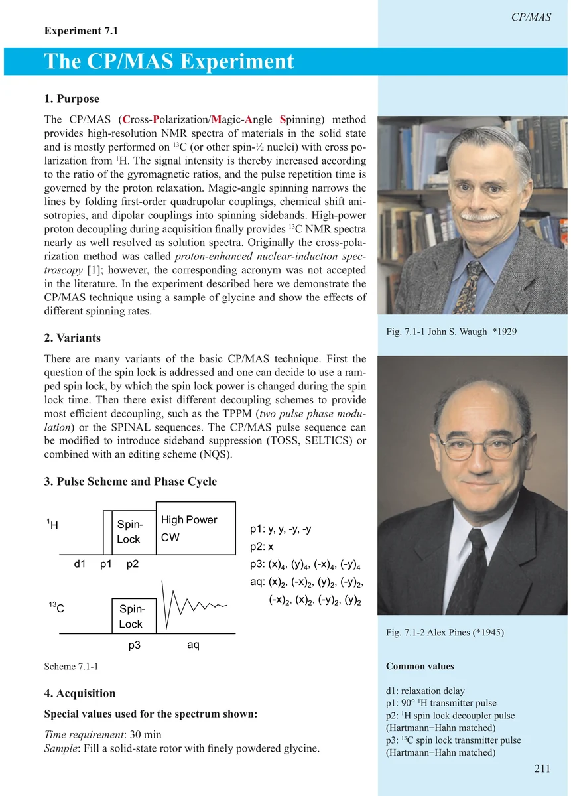
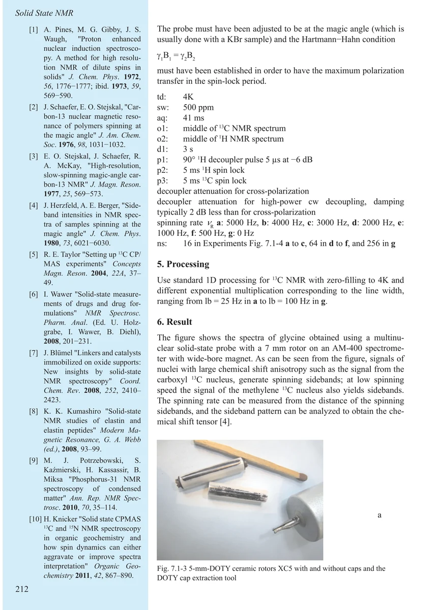
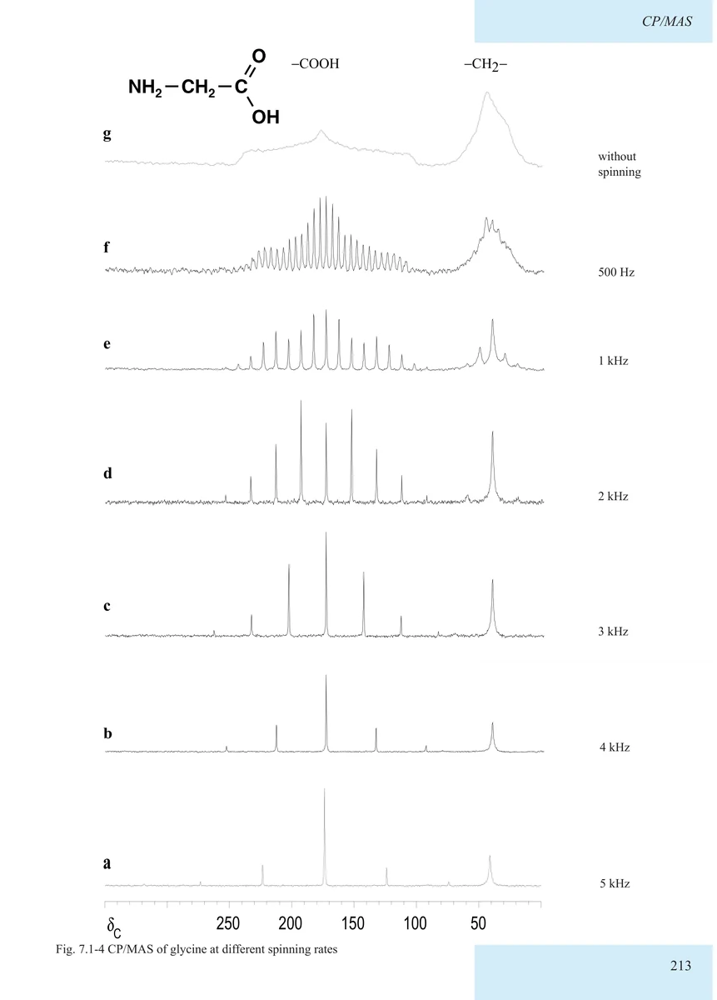
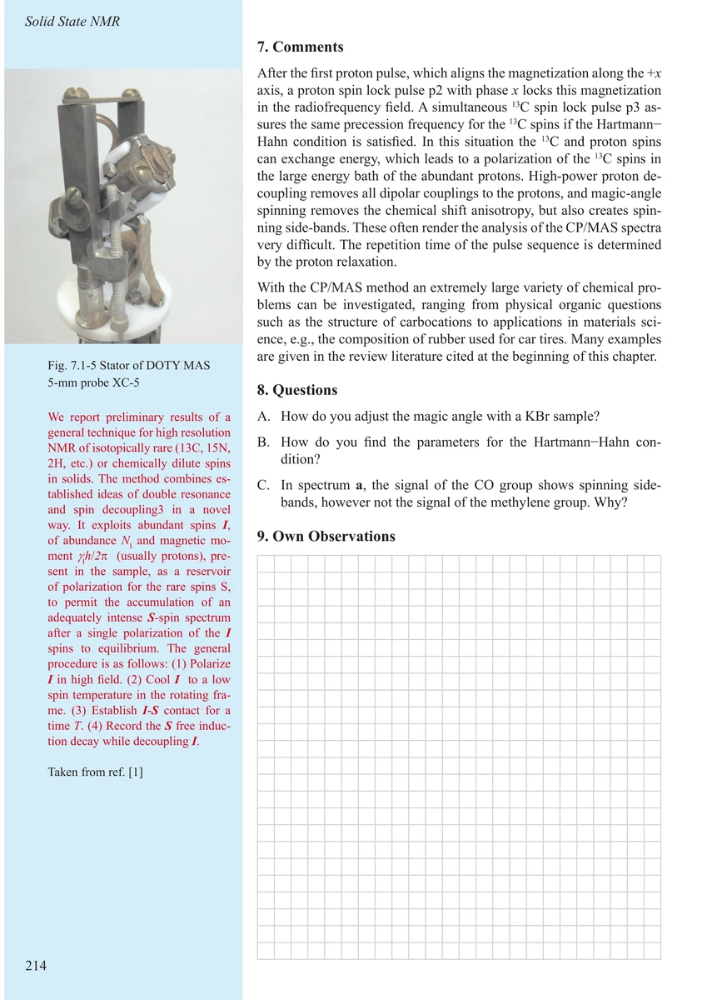

Item 7.1
The CP/MAS Experiment
CP/MAS 实验
PDF 221–224 · 原书 211–214 · An Excursion to the Solid State and to Structural Biology




核磁共振实验方法、脉冲序列与谱图实践
Item 7.1
CP/MAS 实验
PDF 221–224 · 原书 211–214 · An Excursion to the Solid State and to Structural Biology



